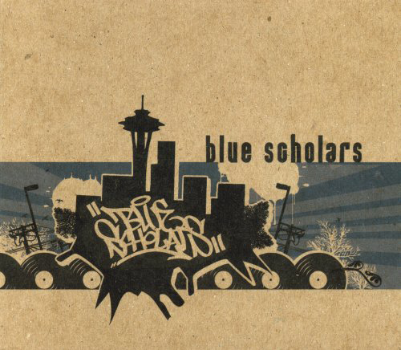
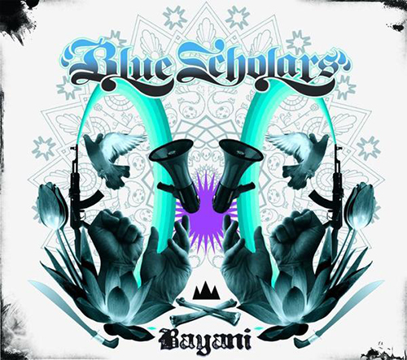
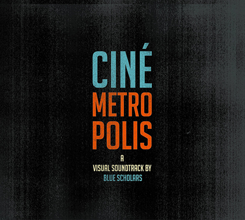

Biography
Blue Scholars are a Seattle-based hip hop duo and have been active since 2002. The duo consists of George Quibuyen (aka Geo) and Alexei Saba Mohajerjasbi (aka Sabzi) who met at a meeting for S.H.O.W. (the Student HipHop Organization of Washington) on The University of Washington campus where they were both students at the time. Sabzi was born in 1981 while it's unclear how old Geo as he doesn't publicly list his birth year.
They've performed in over 400 shows together across the US and opened for and shared the stages with artists such as Kanye West, The Coup, Slick Rick, and Masta Ace. In 2006, the Blue Scholars received top honors in the hip hop category of the Seattle Weekly's Music Awards Poll, and were also the top vote-getters overall; in earlier years, they had been recognized in the categories of Best Hip-hop Artist, Best Local Single, and Best Album.
They haven't released an album since 2011 but are both individually active with Geo creating and promoting music with fellow emcee, Bambu and Sabzi releasing music on his own.
Notable Work
Their full-length albums include:- Blue Scholars
- Bayani
- Cinemetropolis
Learn more about them here.
Artisan Links
Photo Gallery



Newsletter
Would you like to sign up for the Blue Scholars e-newsletter?
NameChoose what kind of updates you want: